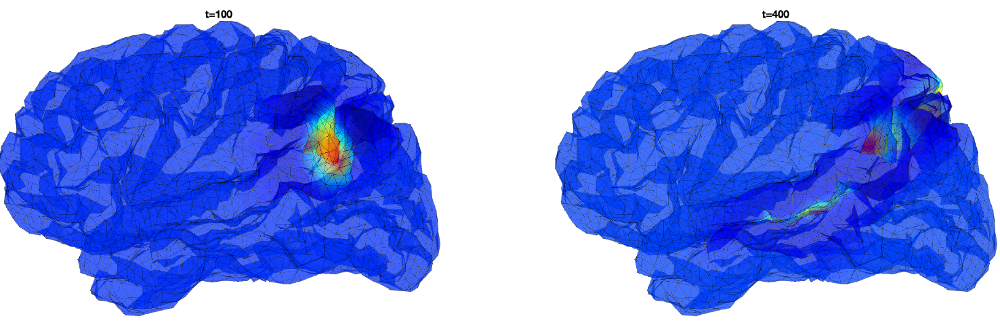
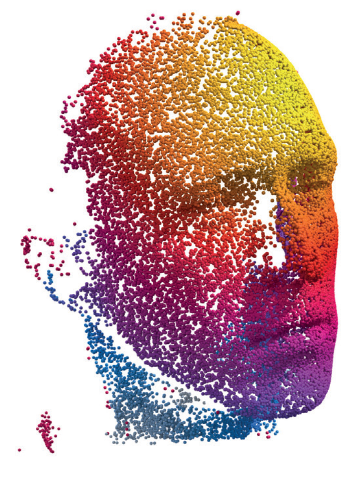
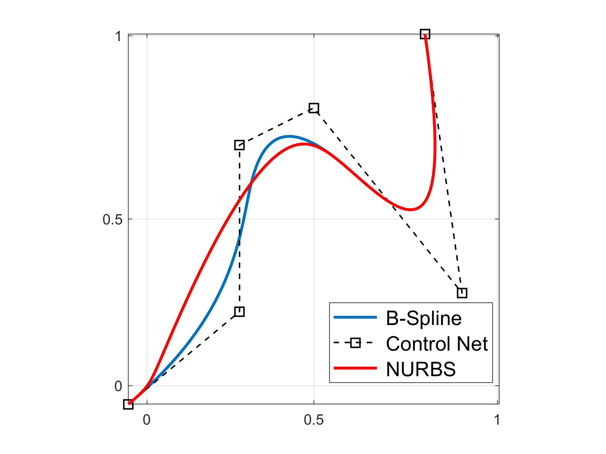
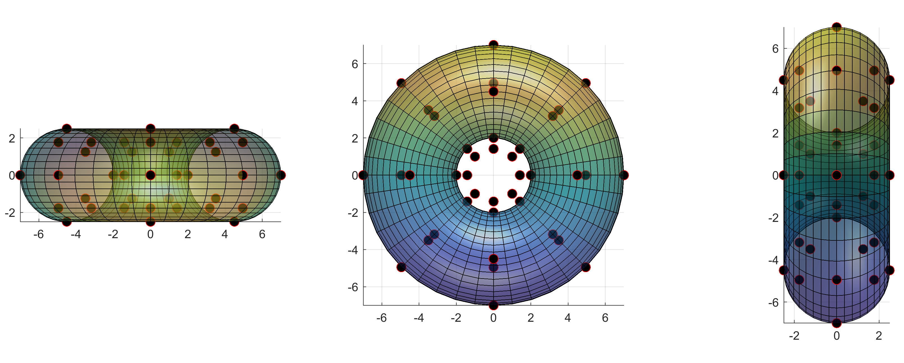
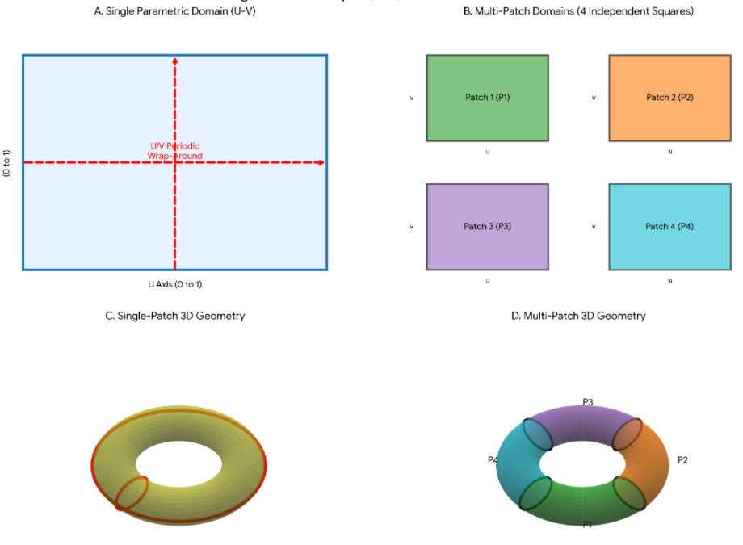
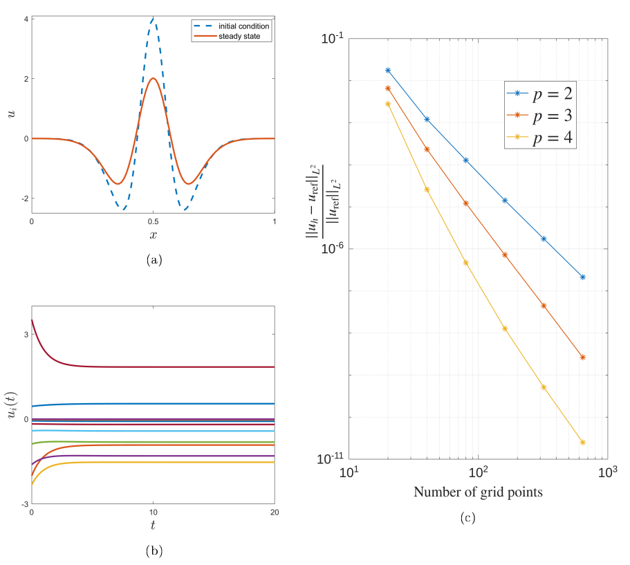
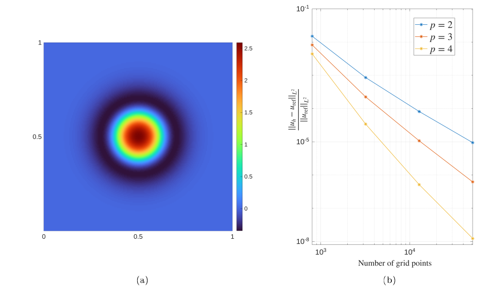

Solving Neural Field Equations with Isogeometric Collocation
Jonathan J Crofts
Newcastle University
20th August 2026

Outline
- Introduction and Project Background
- Neural Field Models
- Curved Surfaces and Geodesics
- Solving the NFM with Isogeometric collocation
- Prelminary Results
- Planar Domains
- Torus
- Project Plan
- Year 1: Computational Approaches
- Year 2: Pattern Formation
- Year 3: Evolutionary Brain Dynamics
Motivation
Cortical geometry: why do we care?
Clinical measurements
- Morphological changes including cortical thinning, white and gray matter loss and loss of gyrification are linked to range of age-related diseases
- Modern MRI techniques allow in-vivo measurements specific to morphological changes
Example Brain shape changes associated with cerebral atrophy in Alzheimer’s disease (Blinkouskaya et al. 2021)

The under appreciated role of cortical wave-like patterns
- Better understanding the role of neural patterns in the brain is crucial for a better understanding of cognition (Muller et al., Nat. Rev. Neuro., 2018)
- Travelling waves shown to organise neural processes across space and time (Zhang et al., Neuron, 2018)
- Spiral-like, rotational wave patterns (brain spirals) are widespread during both resting and cognitive task states (Xu et al., Nat Hum. Behav., 2023)


How does geometry constrain function
 Pang et al., Nature, 2023
Pang et al., Nature, 2023
- Is geometry a more fundamental constraint than interregional connectivity?
- Study by Pang et al suggests dynamics results from excitation of fundamental, resonant modes - derived from the geometry not the connectivity
- This view is fairly controversial!
The study by Pang raises as many questions as answers
- Largely accepted that key insights are provided linking geometry and function (See Luo et al., Trends in Cog. Neuro., 2023)
- However at least two 'critical' commentaries exist to date:
- Patil et al., 2023 warn that the result might be due to statistical overfitting; and
- Faskowitz et al., 2023 further claim the model overlooks topologically complex and long-distance connectivty


The role of long-range connections?
- Deco et al., 2025 emphasises the key role of long-range connections
- A much smaller number of modes are needed when structural connectivity information is included
- These studies still rely on idealised (homogeneous and highly localised) local connectivity rules
- Cortical eigenmodes are derived from the wave equation and so do not include geodesic distances

Where do we come in?
- Three year Leverhulme funded project to study the impact of cortical geometry on brain function
- Team consists of myself, David and Neekar (plus colaborators at Newcastle University)
- Project goals
- Develop novel CAD based methods for solving NFMs efficiently on curved cortical geometries
- Investigate pattern forming in NFMs on curved geometries
- Explore the evolutionary role of brain geometry for brain function


Outline
- Introduction and Project Background
- Neural Field Models
- Curved Surfaces and Geodesics
- Solving the NFM with Isogeometric collocation
- Preliminary Results
- Planar Domains
- Torus
- Project Plan
- Year 1: Computational Approaches
- Year 2: Pattern Formation
- Year 3: Evolutionary Brain Dynamics
Neural Modelling


- There are approximately 100 billion neurons in the brain with each electrode measuring the average activity of 100s of thousands of neurons
- Brain dynamics commonly modelled using network models of the form
\[ \frac{\mathrm{d}u_i}{\mathrm{d}t} = \frac{1}{\tau_i}\left(-u_i(t) + \sum_{j=1}^N w_{ij} f(u_j(t))\right)\quad i=1,\ldots, N \]
Neural Field Models

In the continuum limit the previously introduced network model becomes
\[ \tau \frac{\partial u(x,t)}{\partial t} = -u(x,t) + \int_{-\infty}^\infty w(x,y)f(u(y,t))\mathrm{d}y \]
Wave Behaviour and Pattern Formation
Complicated patterns have been observed experimentally (Bressloff and Kilpatrick, 2010)
- Spiral waves have been linked to working memory and sensory input
- Spatially localised patterns have been observed in cortical slices


This is related to Turing's work on pattern formation in reaction-diffusion models
Solving NFMs on Curved Surfaces
Coombes et al. (Physica D, 2017) solved the following NFM on a sphere
This is the so-called Nunez model
- $\Omega:=S^2$ is the surface of the unit sphere in $\mathbb{R}^3$
- $w(\mathbf{r},\mathbf{r}')$ is the weight distribution, $f$ the firing rate function and $\tau(\mathbf{r},\mathbf{r}')$ specifies distance-dependent delays

- Solutions can be represented by spherical harmonics
- Geodesic distances are known
Recent Related Work
- Martin et al., 2018 used collocation techniques alongside the fast marching algorithm to solve the NFM:
- Ishii and Watanebe, 2025 reports pattern dynamics in a neural field equation defined on spheroids using asymptotic methods
- Shaw et al., 2025 use radial basis functions to approximate NFMs on curved domains and fast marching as in our earlier work

Geodesic Distances
For a general surface the computation of geodesics reqiures numerical algorithms


A large class of methods are based on formulating the problem in terms of a related PDE on a smooth surface
This typically results in the need to solve the so-called Eikonal equation:
\[ \begin{align*} |\nabla\phi|^2 &= 1\quad \text{on } M\\ \phi &= 0 \quad \text{on } \partial M \end{align*} \]where $\phi:M\longrightarrow \mathbb{R}$ is the distance function
The Heat Method
Distance between two points $x$ and $y$ on a Riemannian manifold is given by Varadhan's formula:
- $k_{t,x}(y)$ the heat kernel measuring heat transfer between $x$ and $y$ in time $t$
- The method can be applied directly to point clouds lacking connectivity

Outline
- Introduction and Project Background
- Neural Field Models
- Curved Surfaces and Geodesics
- Solving the NFM with Isogeometric collocation
- Prelminary Results
- Planar Domains
- Torus
- Project Plan
- Year 1: Computational Approaches
- Year 2: Pattern Formation
- Year 3: Evolutionary Brain Dynamics
Isogeometric Analysis Hughes, Cottrell and Bazilevs
Based on the isogeometric philosophy, the solution space for dependent variables is represented in terms of the same functions that represent geometry (Hughes et al. 2005)
- Relatively new method for solving problems governed by differential equations
- Many features in common with FEM and some mesheless methods
- Based on geometric properties and inspired from CAD
- Approach is based on NURBS (Non-Uniform Rational B-Splines), a standard technology in CAD systems
NURBS Curves
Control points of sample curve with $p=3$
| $i$ | 0 | 1 | 2 | 3 | 4 | 5 |
|---|---|---|---|---|---|---|
| $P_{i,x}$ | 0 | 0.3 | 0.3 | 0.5 | 0.9 | 1 |
| $P_{i,y}$ | 0 | 0.25 | 0.7 | 0.8 | 0.3 | 1 |
| $w_i$ | 1 | 5 | 1 | 1 | 1 | 1 |

NURBS Surfaces
A NURBS surface is obtained by calculating the tensor product of the previously defined basis functions $\left\{N_{i,p}\right\}$A CAD representation of a surface is expressed using a NURBS geometry as
the $\left\{\mathbf{P}_{i,j}\right\}$ are control points and

Isogeometric Collocation
To solve the Amari equation using IGA-C
We approximate the unknown function $u(\mathbf{x},t)$ using the same NURBS basis introduced earlier i.e.
\[ u_h(\mathbf{x},t) = \sum_{i=0}^n\sum_{j=0}^m R_{i,j}^{p,q}(u,v)u_{i,j}(t) \] Here, the $u_{i,j}(t)$ are unknown control variables, and $u_h$ is our numerical approximation of the solution $u$Substituting this expression into our NFM and enforcing equality at a set of collocation points $\{\mathbf{x}_k\}_{k=1}^N$ we obtain
\[ \begin{align*} \sum_{i=0}^n\sum_{j=0}^m\frac{\mathrm{d}u_{i,j}(t)}{\mathrm{d}t}R_{i,j}(\mathbf{x}_k) &= -\sum_{i=0}^n\sum_{j=0}^m u_{i,j}(t)R_{i,j}(\mathbf{x}_k)\\ &+\int_\Omega w(d\left(\mathbf{x}_k,\mathbf{x}'\right))f\left(\sum_i\sum_j u_{i,j}(t)R_{i,j}(\mathbf{x}') - h\right)\mathrm{d}\mathbf{x}' \end{align*} \]Or
Here $N = (n+1)(m+1)$ and $M$ is the number of quadrature points
In our experiments we make the following choices:
- We use cubic basis functions
- Collocation points are defined as Greville abscissae
- The integral is approximated using the trapezoidal rule
Outline
- Introduction and Project Background
- Neural Field Models
- Curved Surfaces and Geodesics
- Solving the NFM with Isogeometric collocation
- Prelminary Results
- Planar Domains
- Torus
- Project Plan
- Year 1: Computational Approaches
- Year 2: Pattern Formation
- Year 3: Evolutionary Brain Dynamics
Single Patch Periodic Spline Spaces
- In the work I present I use a single NURBS patch and restrict to periodic solutions
- In the case of the torus the picture is as follows

Planar 1D

- 1D neural field model $$u_t(x,t)=-u(x,t)+\int_0^1w(|x-y|)f(u(y,t)-h)\,\mathrm{d}y$$
- IGA collocation
- Trapezoidal rule to solve the integral
- Proof of principle
- Steady states are persistent solutions akin to 'memories'
Planar 2D

- 2D neural field model $$u_t(\mathbf{x},t)=-u(\mathbf{x},t)+\int_{[0, 1]^2}w(|\mathbf{x}-\mathbf{x}'|)f(u(\mathbf{x}')-h)\,\mathrm{d}\mathbf{x}'$$
- IGA collocation
- Trapezoidal rule to solve the integral
- Proof of principle
2D Planar Travelling Bumps and Waves
Torus

- Simplest example of a surface for which analytic geodesics are unavailable
- For comparison with previous work we also use the standard parameterisation of the torus: \[ \left(\theta, \phi\right) \mapsto \left(\begin{array}{c} (R+r\cos{\theta})\cos{\phi}\\(R+r\cos{\theta})\sin{\phi}\\r\sin{\theta} \end{array}\right) = \left(\begin{array}{c}x\\y\\z \end{array}\right) \]
- Here, $R$ and $r$ are respectively the major and minor curvature radii
- We will use the above representation to solve the integral term using trapezoidal method on a discretisation of $[0, 2\pi]^2$
To solve our NFM we deploy the aforementioned numerical methods ...
Torus: Connectivity
- Heat/MMP method applied to the Torus


- Wizard hat connectivity kernel

Torus: Solutions
Stationary bump solutions for the Amari equation

Top: trapezoidal (LHS); isogeometric collocation (RHS)
Bottom: mesh-free isogeometric collocation

Torus: Solutions
Travelling bump solutions for the adaptive Amari equation using MMP algorithm for geodesic computations
- Solutions travelling along geodesics behave as in the planar case
- Non-geodesic traversals are dependent upon their IC
Torus: Solutions
Travelling bump solutions for the adaptive Amari equation using MMP algorithm for geodesic computations
- Solutions travelling along geodesics behave as in the planar case
- Non-geodesic traversals are dependent upon their IC
Torus: Solutions
Travelling bump solutions for the adaptive Amari equation using MMP algorithm for geodesic computations
- Solutions travelling along geodesics behave as in the planar case
- Non-geodesic traversals are dependent upon their IC
Travelling Waves on a Torus: longitudinal ring solutions
Travelling Waves on a Torus: longitudinal ring solutions
Travelling Waves on a Torus: multiple longitudinal waves
Travelling Waves on a Torus: meridional ring solutions
Outline
- Introduction and Project Background
- Neural Field Models
- Curved Surfaces and Geodesics
- Solving the NFM with Isogeometric collocation
- Prelminary Results
- Planar Domains
- Torus
- Project Plan
- Year 1: Computational Approaches
- Year 2: Pattern Formation
- Year 3: Evolutionary Brain Dynamics
Year 1: Computational Approaches
Develop isogeometric collocation (IGA-C) methods that use CAD geomerty techniques to accurately solve NFMs on on complex geometries
- NURBS modelling provides a smooth realistic representation of the cortical surface
- IGA-C is a numerical method that deploys the same NURBS basis functions describing the geometry to approximate neural activity
- These methods have been previously applied to models in mechanics and acoustics
- First application within a neuroscience setting


The aim of this package is hello the rertpackage is hello the rertpackage is hello the rertrertpackage is hello the rert
Aim: develop efficient IGA-C scheme for generic connectivity kernels on complex geometries
Year 2: Pattern Formation
Reveal the extent to which curvature impacts solution structure of non-local models by performing a computational bifurcation and stability analysis
- Reveal novel mechanisms underlying pattern formation in curved domains
- We shall consider toy geometries such as the torus for which geodesic distances are unavailable
- Curvature-induced properties (e.g. static Vs moving patterns)
- First application to non-local models on curved domains


The aim of this package is hello the rertpackage is hello the rertpackage is hello the rertrertpackage is hello the rert
Aim: elucidate novel mechanisms for generating patterns
Year 3: Evolutionary Brain Dynamics
Perform model-based studies of complex experiments to determine the effect of the cortical geometry on mechanisms of wave formation, propagation and termination
- How do evolutionary changes in brain shape impact wave dynamics?
- Can we isolate spatial scales that support emergent neural activity patterns of relevance to brain function?
- Investigate the effect of connection heterogeneity on wave propagation in our model, comparing results to an isotropic neural model

The aim of thisTheThe aim of thisThe aim of this aim of thisThe aim of this package is hello the rertpackage is hello the rertpackage is hello the rertrertpackage is hello the rert
Aim: investigate the role of geometry in the evolutionary shaping of brain function
Aknowledgements
Collaborators
& Thank You!
References